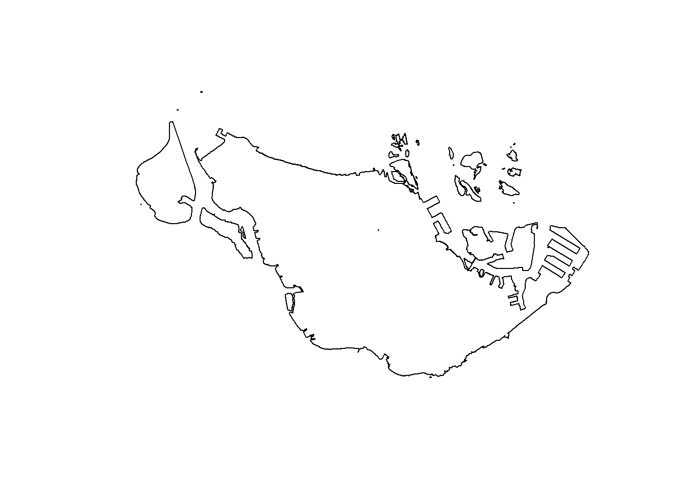
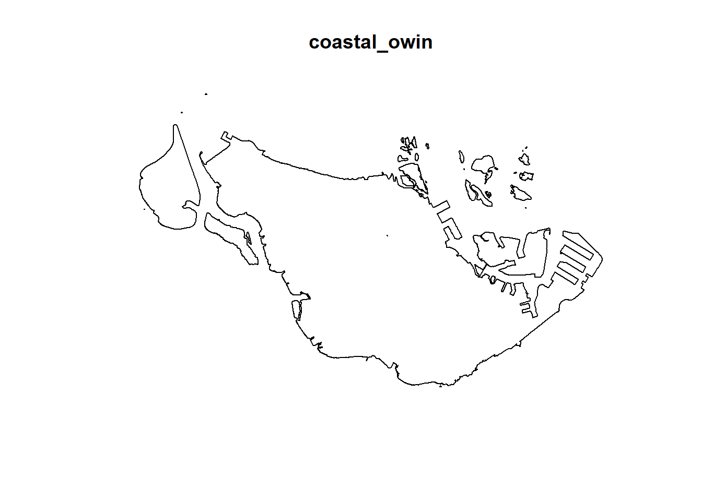
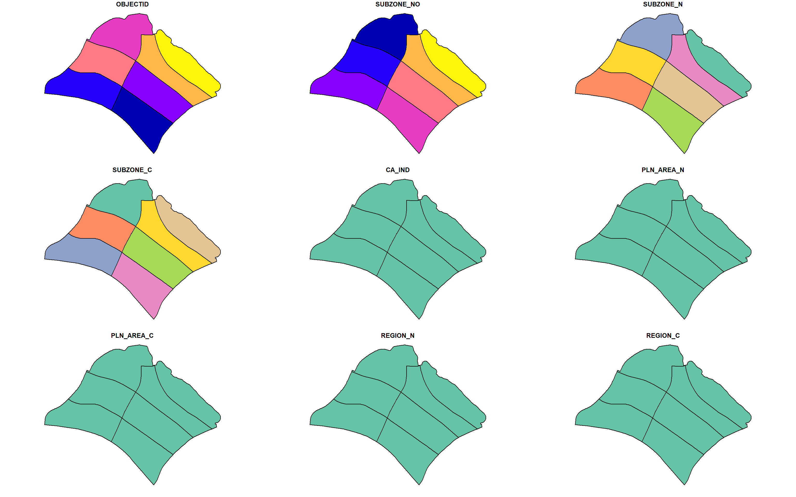
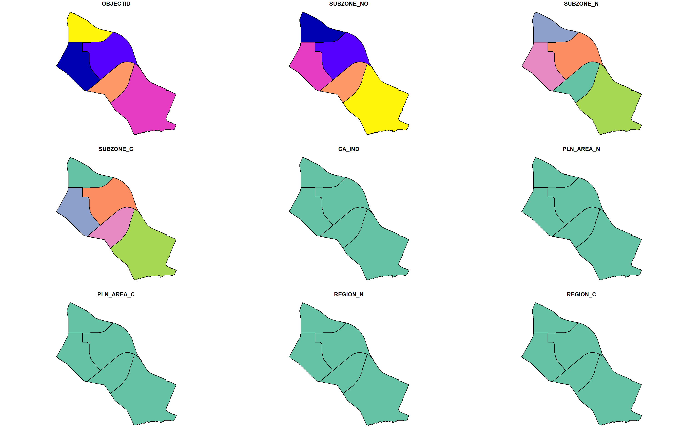
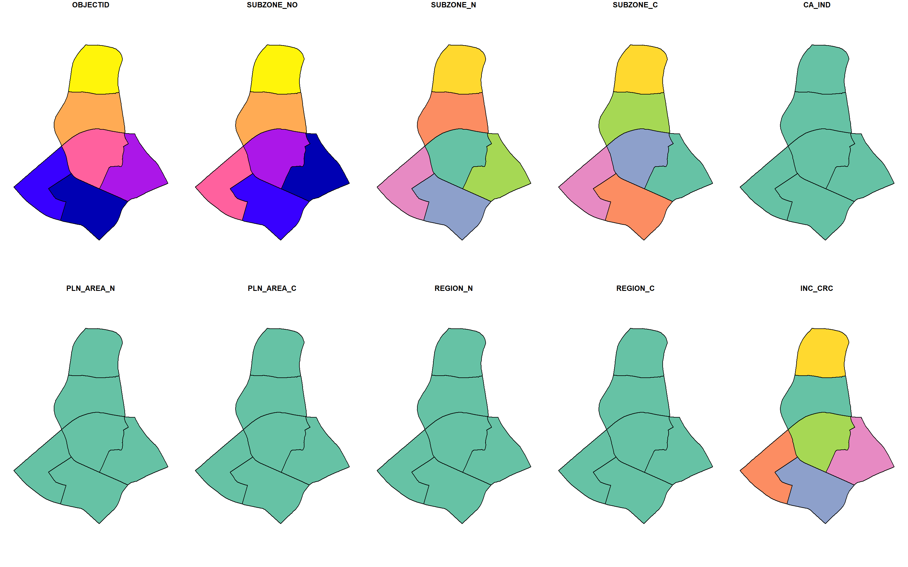
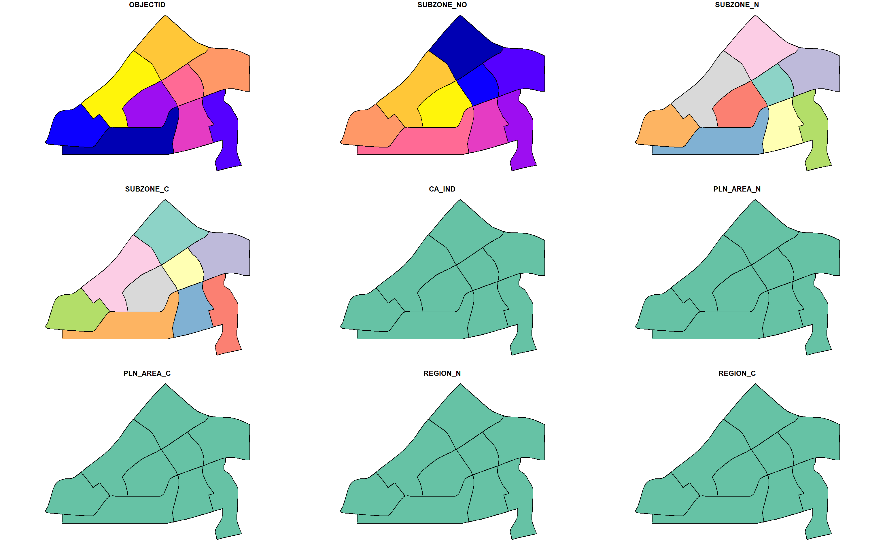

Reveal Code
pacman::p_load(maptools, sf, raster, spatstat, tmap, tidyverse)Yung Qi Yang
January 22, 2024
Reading layer `MP14_SUBZONE_WEB_PL' from data source
`C:\Users\yungq\Desktop\SMU Modules\Y4S1\Geospatial Analysis and Applications\IS415 Course Website\In-Class_Exercise\In-Class Exercise_03\Data\Master Plan 2014'
using driver `ESRI Shapefile'
Simple feature collection with 323 features and 15 fields
Geometry type: MULTIPOLYGON
Dimension: XY
Bounding box: xmin: 2667.538 ymin: 15748.72 xmax: 56396.44 ymax: 50256.33
Projected CRS: SVY21Rows: 323
Columns: 16
$ OBJECTID <int> 1, 2, 3, 4, 5, 6, 7, 8, 9, 10, 11, 12, 13, 14, 15, 16, 17, …
$ SUBZONE_NO <int> 1, 1, 3, 8, 3, 7, 9, 2, 13, 7, 12, 6, 1, 5, 1, 1, 3, 2, 2, …
$ SUBZONE_N <chr> "MARINA SOUTH", "PEARL'S HILL", "BOAT QUAY", "HENDERSON HIL…
$ SUBZONE_C <chr> "MSSZ01", "OTSZ01", "SRSZ03", "BMSZ08", "BMSZ03", "BMSZ07",…
$ CA_IND <chr> "Y", "Y", "Y", "N", "N", "N", "N", "Y", "N", "N", "N", "N",…
$ PLN_AREA_N <chr> "MARINA SOUTH", "OUTRAM", "SINGAPORE RIVER", "BUKIT MERAH",…
$ PLN_AREA_C <chr> "MS", "OT", "SR", "BM", "BM", "BM", "BM", "SR", "QT", "QT",…
$ REGION_N <chr> "CENTRAL REGION", "CENTRAL REGION", "CENTRAL REGION", "CENT…
$ REGION_C <chr> "CR", "CR", "CR", "CR", "CR", "CR", "CR", "CR", "CR", "CR",…
$ INC_CRC <chr> "5ED7EB253F99252E", "8C7149B9EB32EEFC", "C35FEFF02B13E0E5",…
$ FMEL_UPD_D <date> 2014-12-05, 2014-12-05, 2014-12-05, 2014-12-05, 2014-12-05…
$ X_ADDR <dbl> 31595.84, 28679.06, 29654.96, 26782.83, 26201.96, 25358.82,…
$ Y_ADDR <dbl> 29220.19, 29782.05, 29974.66, 29933.77, 30005.70, 29991.38,…
$ SHAPE_Leng <dbl> 5267.381, 3506.107, 1740.926, 3313.625, 2825.594, 4428.913,…
$ SHAPE_Area <dbl> 1630379.27, 559816.25, 160807.50, 595428.89, 387429.44, 103…
$ geometry <MULTIPOLYGON [m]> MULTIPOLYGON (((31495.56 30..., MULTIPOLYGON (…Reading layer `ChildCareServices' from data source
`C:\Users\yungq\Desktop\SMU Modules\Y4S1\Geospatial Analysis and Applications\IS415 Course Website\In-Class_Exercise\In-Class Exercise_03\Data\Childcare\ChildCareServices.geojson'
using driver `GeoJSON'
Simple feature collection with 1925 features and 2 fields
Geometry type: POINT
Dimension: XYZ
Bounding box: xmin: 103.6878 ymin: 1.247759 xmax: 103.9897 ymax: 1.462134
z_range: zmin: 0 zmax: 0
Geodetic CRS: WGS 84Rows: 1,925
Columns: 3
$ Name <chr> "kml_1", "kml_2", "kml_3", "kml_4", "kml_5", "kml_6", "kml…
$ Description <chr> "<center><table><tr><th colspan='2' align='center'><em>Att…
$ geometry <POINT [m]> POINT Z (40985.94 33848.38 0), POINT Z (28308.65 455…
Marked planar point pattern: 1925 points
Average intensity 2.417323e-06 points per square unit
Coordinates are given to 3 decimal places
i.e. rounded to the nearest multiple of 0.001 units
marks are of type 'character'
Summary:
Length Class Mode
1925 character character
Window: rectangle = [11810.03, 45404.24] x [25596.33, 49300.88] units
(33590 x 23700 units)
Window area = 796335000 square unitsUsing an owin layer ensures that the coastal outline layer is defined as the study layer, and prevents event geopoints from occurring outside the defined boundaries.
Input has to be a simple features object
Window: polygonal boundary
80 separate polygons (35 holes)
vertices area relative.area
polygon 1 91 5.35110e+04 1.92e-05
polygon 2 71 2.92428e+04 1.05e-05
polygon 3 668 1.92502e+08 6.90e-02
polygon 4 14663 2.49068e+09 8.93e-01
polygon 5 1027 4.57934e+06 1.64e-03
polygon 6 132 3.41659e+05 1.22e-04
polygon 7 4 9.65214e+02 3.46e-07
polygon 8 (hole) 3 -5.24979e-03 -1.88e-12
polygon 9 6 1.61352e+03 5.78e-07
polygon 10 10 1.76004e+03 6.31e-07
polygon 11 95 2.13728e+05 7.66e-05
polygon 12 (hole) 3 -1.15869e-03 -4.15e-13
polygon 13 (hole) 4 -6.68233e-02 -2.40e-11
polygon 14 64 1.23007e+05 4.41e-05
polygon 15 37 4.65031e+04 1.67e-05
polygon 16 (hole) 3 -1.99263e-02 -7.14e-12
polygon 17 (hole) 3 -7.04084e-03 -2.52e-12
polygon 18 (hole) 3 -1.83711e-02 -6.58e-12
polygon 19 4 3.40153e+02 1.22e-07
polygon 20 (hole) 4 -4.07838e-02 -1.46e-11
polygon 21 (hole) 3 -7.11139e-03 -2.55e-12
polygon 22 30 1.54027e+04 5.52e-06
polygon 23 234 1.69574e+06 6.08e-04
polygon 24 (hole) 3 -4.19239e-03 -1.50e-12
polygon 25 155 9.58412e+05 3.44e-04
polygon 26 145 3.45282e+06 1.24e-03
polygon 27 211 1.68520e+06 6.04e-04
polygon 28 1045 1.59423e+07 5.71e-03
polygon 29 15 1.44663e+05 5.18e-05
polygon 30 106 1.08919e+04 3.90e-06
polygon 31 14 2.10261e+04 7.54e-06
polygon 32 (hole) 13 -1.40542e+03 -5.04e-07
polygon 33 227 3.95809e+06 1.42e-03
polygon 34 19 1.10944e+05 3.98e-05
polygon 35 83 1.89395e+04 6.79e-06
polygon 36 266 5.39651e+06 1.93e-03
polygon 37 10 2.36858e+04 8.49e-06
polygon 38 75 6.21330e+04 2.23e-05
polygon 39 (hole) 12 -2.99520e+02 -1.07e-07
polygon 40 (hole) 40 -2.14906e+04 -7.70e-06
polygon 41 148 1.11129e+04 3.98e-06
polygon 42 (hole) 7 -5.03814e-01 -1.81e-10
polygon 43 478 7.38485e+06 2.65e-03
polygon 44 234 7.48541e+06 2.68e-03
polygon 45 142 1.15385e+04 4.14e-06
polygon 46 (hole) 28 -7.15364e+01 -2.56e-08
polygon 47 (hole) 48 -4.95148e+02 -1.77e-07
polygon 48 (hole) 20 -1.57153e+01 -5.63e-09
polygon 49 (hole) 351 -4.34621e+03 -1.56e-06
polygon 50 45 8.99357e+03 3.22e-06
polygon 51 40 4.96121e+04 1.78e-05
polygon 52 47 1.36923e+05 4.91e-05
polygon 53 65 3.02045e+05 1.08e-04
polygon 54 22 2.41833e+04 8.67e-06
polygon 55 44 8.06165e+03 2.89e-06
polygon 56 711 4.58689e+07 1.64e-02
polygon 57 (hole) 3 -1.00930e+00 -3.62e-10
polygon 58 77 1.17523e+06 4.21e-04
polygon 59 (hole) 3 -1.77261e-01 -6.35e-11
polygon 60 (hole) 26 -4.49657e+03 -1.61e-06
polygon 61 (hole) 3 -7.47038e-03 -2.68e-12
polygon 62 (hole) 3 -2.36780e+00 -8.49e-10
polygon 63 (hole) 3 -1.42810e-01 -5.12e-11
polygon 64 71 2.01674e+04 7.23e-06
polygon 65 10 7.15336e+02 2.56e-07
polygon 66 (hole) 3 -1.21540e+00 -4.36e-10
polygon 67 (hole) 3 -1.76958e-01 -6.34e-11
polygon 68 (hole) 3 -1.30648e-02 -4.68e-12
polygon 69 (hole) 3 -1.02919e-04 -3.69e-14
polygon 70 (hole) 36 -2.78693e+04 -9.99e-06
polygon 71 (hole) 4 -7.34757e-02 -2.63e-11
polygon 72 (hole) 36 -1.42964e+05 -5.12e-05
polygon 73 (hole) 317 -1.81985e+05 -6.52e-05
polygon 74 285 5.73153e+06 2.05e-03
polygon 75 (hole) 3 -7.79100e-06 -2.79e-15
polygon 76 (hole) 3 -7.32287e-03 -2.62e-12
polygon 77 (hole) 3 -7.86231e+00 -2.82e-09
polygon 78 30 9.97535e+04 3.58e-05
polygon 79 (hole) 3 -3.14307e-02 -1.13e-11
polygon 80 27 5.34853e+04 1.92e-05
enclosing rectangle: [6181764, 6288537] x [10275298, 10343006] units
(106800 x 67710 units)
Window area = 2790050000 square units
Fraction of frame area: 0.386
Unlike sp objects, sf objects can be used in conjunction with the tidyverse libraries to conduct data wrangling upon their geospatial data tables



